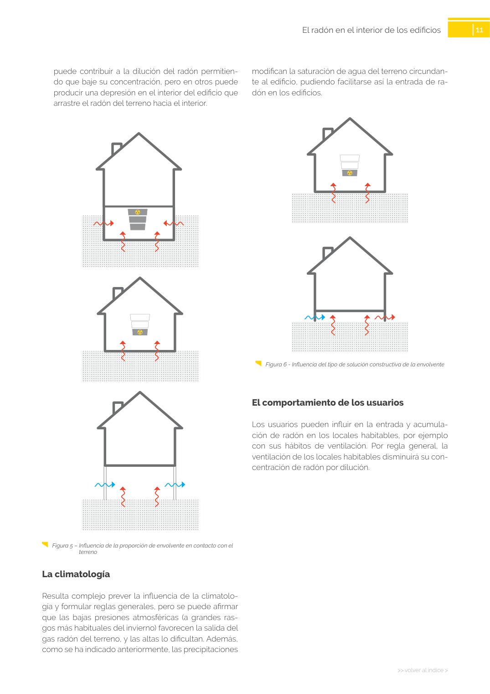

<!doctype html>
<html lang="es"><head><meta charset="utf-8">
<meta name="viewport" content="width=device-width, initial-scale=1">
<title>GUIA · El comportamiento de los usuarios</title><link rel="stylesheet" href="../estilo.css">
</head><body>
<nav><a href="../index.html">Índice</a> › <a href="../doc/guia-pdf-23d2f2198c3b-sin-fecha-6765d0c34c51.html">GUIA</a> › a0029</nav>

<header class="meta">
<p><a href="../doc/guia-pdf-23d2f2198c3b-sin-fecha-6765d0c34c51.html">GUIA</a> · El comportamiento de los usuarios · versión sin-fecha · capa guia</p>
</header>
<div class="cita"><strong>Cita:</strong> GUIA · ID técnico a0029 · El comportamiento de los usuarios · páginas físicas pág. 11 (impresas: ['11'])</div>
<p>Formatos: <a href="../../contenido/docs/GUIA-PDF-23d2f2198c3b/sin-fecha__6765d0c34c51/apartado/a0029__el-comportamiento-de-los-usuarios.json">JSON compacto</a> · <a href="../../contenido/docs/GUIA-PDF-23d2f2198c3b/sin-fecha__6765d0c34c51/apartado/a0029__el-comportamiento-de-los-usuarios.md">Markdown</a> · <a href="../../contenido/docs/GUIA-PDF-23d2f2198c3b/sin-fecha__6765d0c34c51/fuente.pdf">PDF fuente</a></p>
<p><a href="../doc/guia-pdf-23d2f2198c3b-sin-fecha-6765d0c34c51.html">Ámbito del documento</a> · <a href="../doc/guia-pdf-23d2f2198c3b-sin-fecha-6765d0c34c51.html#ambito">texto del ámbito</a> ·
<a href="../doc/guia-pdf-23d2f2198c3b-sin-fecha-6765d0c34c51.html">documento y tablas</a></p>
<nav><a href="guia-pdf-23d2f2198c3b-sin-fecha-6765d0c34c51__a0028.html">← Las características constructivas del edificio</a> <a href="guia-pdf-23d2f2198c3b-sin-fecha-6765d0c34c51__a0030.html">La climatología →</a></nav>
<h1>El comportamiento de los usuarios</h1>
<p>Tipo: tablas, figuras · nivel 3 · sección estimada: 8 	 escalera abierta · padre: a0025</p>
<pre class="literal">El comportamiento de los usuarios
Los usuarios pueden influir en la entrada y acumula­
ción de radón en los locales habitables, por ejemplo
con sus hábitos de ventilación. Por regla general, la
ventilación de los locales habitables disminuirá su con­
centración de radón por dilución.
puede contribuir a la dilución del radón permitien­
do que baje su concentración, pero en otros puede
producir una depresión en el interior del edificio que
arrastre el radón del terreno hacia el interior.
Figura 5 – Influencia de la proporción de envolvente en contacto con el
terreno</pre>
<h2>Tablas en estas páginas</h2><ul><li>p. 11 · <a href="../../contenido/docs/GUIA-PDF-23d2f2198c3b/sin-fecha__6765d0c34c51/tabla/p0011_t01.json">p0011_t01.json</a> · <a href="../../contenido/docs/GUIA-PDF-23d2f2198c3b/sin-fecha__6765d0c34c51/tabla/p0011_t01.csv">.csv</a></li></ul><h2>Página visual</h2><figure><a href="../../contenido/docs/GUIA-PDF-23d2f2198c3b/sin-fecha__6765d0c34c51/figura/p0011.png"></a><figcaption>Página visual 11 (fuente para fórmulas/tablas/figuras)</figcaption></figure><p class="aviso">PDF fuente redistribuible: copia fiel enlazada en esta página (SHA256 verificado).</p>
<footer>Generado estáticamente desde JSON normalizado; sin JavaScript ni servicios externos.
El JSON es la fuente; este HTML es caché reproducible.</footer>
</body></html>
